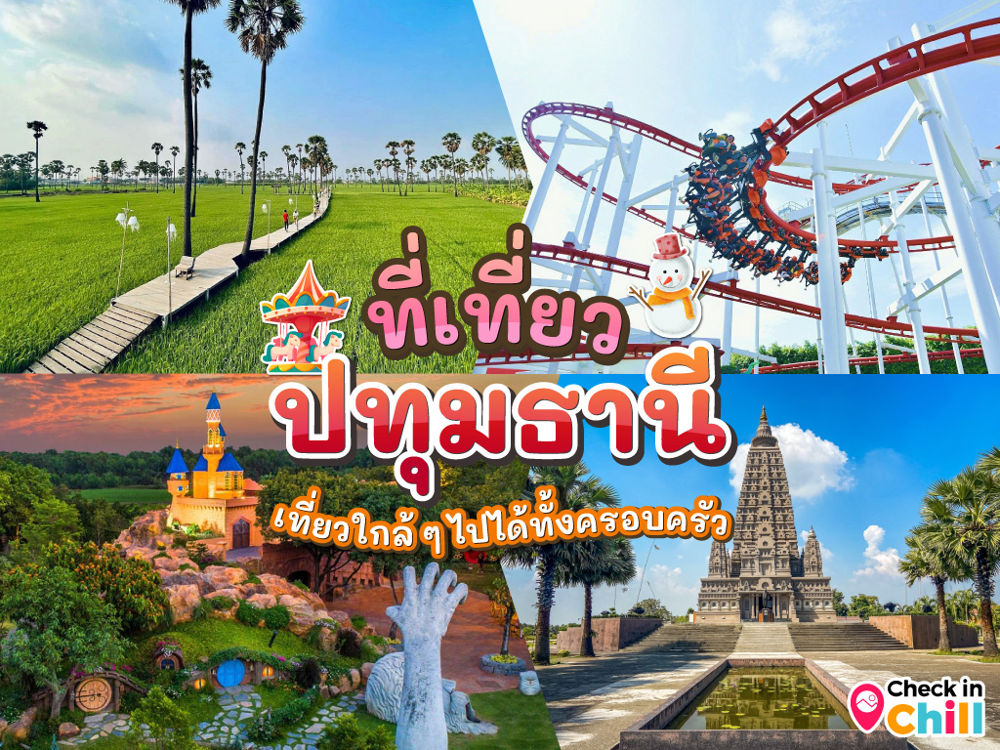
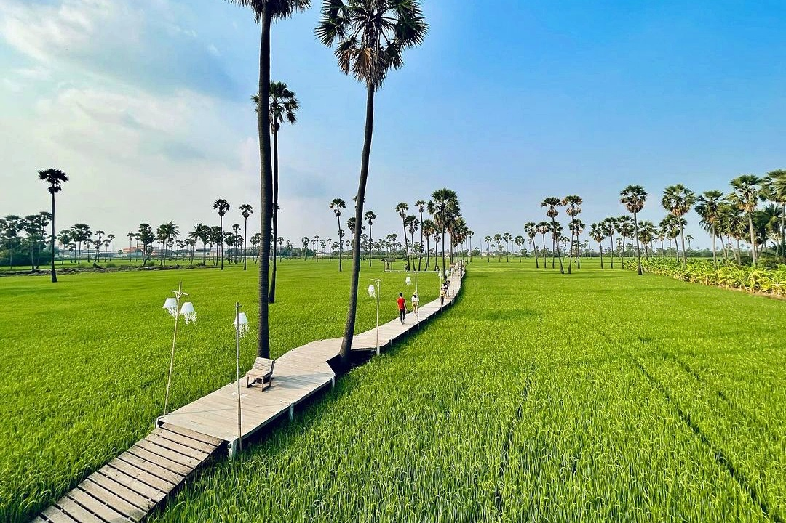
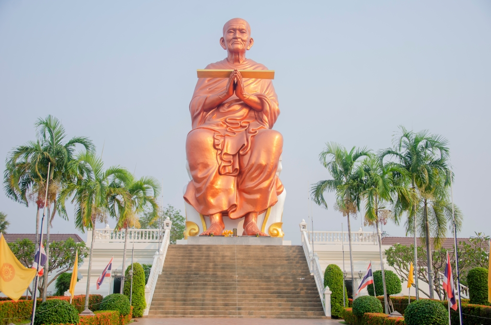
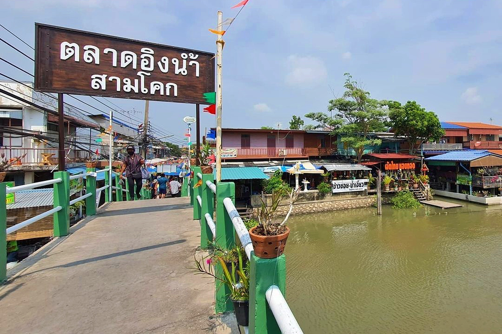

ยินดีต้อนรับสู่จังหวัดปทุมธานี


Dream World
สวนสนุกดรีมเวิลด์ สวนสนุกใกล้กรุงเทพฯ ย่านคลอง 3 โลกแห่งความสุขสนุกได้ทั้งครอบครัว
สนุกสนานไปกับเครื่องเล่นนานาชนิด อาทิ ทอร์นาโด, ไวกิ้งส์, เฮอริเคน, สกายโคสเจอร์, แกรนด์แคนยอน,
ซูเปอร์สแปลช, รถบั๊ม, ปราสาทผีสิง, เคเบิ้ลคาร์ เป็นต้น สัมผัสบรรยากาศหิมะที่เมืองหิมะ ตื่นตาตื่นใจไปกับ 4D
แอดเวนเจอร์, ฮอลีวู้ด แอคชั่น และเอเลี่ยน เด็กๆ ไม่ต้องห่วง เพราะที่นี่เค้ามีเครื่องเล่นสำหรับเด็กบริการ
ไม่ว่าจะเป็นปลาบิน หนูลมกรด เรืออินเดียนแดง รถด่วนอวกาศ และอีกมากมาย ภายในมีจุดถ่ายรูปเยอะมาก
สามารถแวะได้ตลอดทาง อีกทั้งยังมีร้านค้า ร้านอาหาร และร้านจำหน่ายของที่ระลึกคอยให้บริการ
ทำให้สามารถสนุกสนานอยู่ที่นี่ได้ทั้งวัน

พิพิธภัณฑ์วิทยาศาสตร์แห่งชาติ คลองห้า
เชื่อว่าหลาย ๆ คนคงจะเคยมากันแล้วล่ะ สำหรับพิพิธภัณฑ์วิทยาศาสตร์แห่งชาติ คลองห้า หรือที่เราเรียกสั้น ๆ
กันว่า ตึกลูกเต๋า ประกอบไปด้วยพิพิธภัณฑ์ 4 แห่ง คือ พิพิธภัณฑ์วิทยาศาสตร์, พิพิธภัณฑ์ธรรมชาติวิทยา,
พิพิธภัณฑ์เทคโนโลยีสารสนเทศ และพิพิธภัณฑ์พระรามเก้า ดำเนินงานโดยกระทรวงการอุดมศึกษา วิทยาศาสตร์
วิจัยและนวัตกรรม เพื่อให้ผู้ที่สนใจ ได้เข้ามาศึกษาหาความรู้ทางด้านวิทยาศาสตร์ การกำเนิดโลก
การกำเนิดสิ่งมีชีวิต เทคโนโลยีสารสนเทศ และอื่น ๆ ภายในมีนิทรรศการ แบบจำลอง, หุ่นจำลอง,
การแสดงวิทยาศาสตร์, โดมดูดาว,ท้องฟ้าจำลอง, ห้องทดลอง และอีกมากมาย เด็กยุค 90’s ต้องเคยมากันทุกคนแน่นอน
เพราะทางโรงเรียนจะจัดให้มาทัศนศึกษากันเป็นประจำ แต่ถ้าได้มาเที่ยวชมอีกครั้งก็จะดีมากเลย หวนนึกถึงวันเก่า
ๆ ที่มากับเพื่อนฝูง หรือหากใครยังไม่เคยมาล่ะก็ ต้องลองมาเที่ยวชมดู จะได้ความสนุกสนาน
บวกกับรับความรู้ไปแบบเต็ม ๆ

ดงตาลสามโคก
สัมผัสวิถีชนบท ท่ามกลางทุ่งนาผืนใหญ่ ที่ดงตาลสามโคก แหล่งท่องเที่ยวทางธรรมชาติในอำเภอสามโคก
ถือเป็นจุดวิวที่มีความสวยงามมาก ภาพที่เห็นเบื้องหน้าคือ ทุ่งนาสีเขียวขจี ต้นตาลสูงเรียงราย
บวกกับท้องฟ้า แนะนำให้มาถ่ายรูปช่วงเช้า พระอาทิตย์ขึ้น หรือช่วงเย็น พระอาทิตย์ตกดิน ได้รูปสวย ๆ
กลับไปแน่นอน เพราะท้องฟ้าจะเป็นสีเหลืองส้ม ซึ่งในแต่ละช่วงเดือน นาข้าวก็จะสลับกันไป
ขึ้นอยู่กับฤดูข้าว เป็นผืนนาเปล่าบ้าง ผืนนาสีเขียว ผืนนาสีเหลือง (ออกรวง) และผืนนาเก็บเกี่ยว ใกล้ ๆ
มี The Aileen Cafe คาเฟ่น่ารักริมนา สะพานไม้ทอดยาว เดินเล่นชมวิวได้ มีมุมถ่ายรูปเยอะ
สามารถแวะไปนั่งจิบกาแฟ ทานขนมกันได้ บรรยากาศดีสุด ๆ

วัดโบสถ์
วัดโบสถ์ เดิมใช้ชื่อว่า วัดสร้อยนางหงษ์ เป็นวัดโบราณตั้งแต่สมัยกรุงศรีอยุธยา
มีขนาดใหญ่อันดับต้น ๆ ของจังหวัด ตั้งอยู่ริมแม่น้ำเจ้าพระยา
สร้างโดยชาวมอญที่อพยพมาจากเมืองหงสาวดีประเทศพม่า พระพุทธรูปองค์สำคัญของวัด คือ หลวงพ่อเหลือ
พระพุทธรูปปางมารวิชัยสร้างด้วยศิลาทราย
ซึ่งเป็นพระพุทธรูปเพียงองค์เดียวที่ยังคงเหลืออยู่อย่างสมบูรณ์ จากเหตุการณ์โจรลักลอบตัดเศียรพระ
ในปี พ.ศ.2507 จึงได้รับการนับถือเป็นพระคู่บ้านคู่เมืองของชาวปทุมธานีนับแต่นั้นมา
โดดเด่นไปด้วยพระพุทธรูปองค์ใหญ่ตระการตา อย่าง “หลวงพ่อโต พรหมรังสี” ความสูง 28 เมตร
ปางค์เทศนาธรรมองค์ใหญ่ที่สุดในไทย จนเรียกกันติดปากว่า “วัดหลวงพ่อโตองค์ใหญ่” และ
“หลวงพ่อโสธรองค์ใหญ่” ที่ผู้คนให้ความสนใจและเข้ามากราบสักการะกันเป็นจำนวนมาก
นอกจากนี้บริเวณวัดฝั่งริมแม่น้ำนอกจากจะเป็นที่ให้อาหารปลาขนาดใหญ่แล้ว
ยังเป็นที่ตั้งของตลาดวิถีชีวิตริมแม่น้ำเจ้าพระยาของชาวบ้านในพื้นที่อีกด้วย
มีของกินทั้งคาวและหวานมากมายที่พร้อมให้ทุกท่านได้เข้ามาเลือกชอป เรียกว่าอิ่มทั้งบุญอิ่มทั้งท้อง
ครบจบในที่เดียว

ตลาดน้ำสามโคก
ตลาดอิงน้ำสามโคก ชุมชนเก่าริมคลองบางเตยและแม่น้ำเจ้าพระยา สามารถมาเดินเล่นหาของกิน
ช็อปปิ้งของฝากได้ที่นี่ ตลาดใกล้กรุงเทพฯ ที่มาไม่ยาก เป็นตลาดเล็ก ๆ ที่มีเสน่ห์ในตัวเอง
พาคุณสัมผัสวิถีชีวิตริมน้ำแบบเรียบง่ายของชาวบ้าน มีสินค้ามากมายให้คุณได้เลือกสรร
เต็มไปด้วยร้านค้ามากมาย ทั้งของกิน ของใช้ และของเล่น วันหยุดว่าง ๆ ช่วงสุดสัปดาห์ เบื่อบ้าน
เบื่อคอนโด ก็ขับรถตรงดิ่งมาที่นี่ได้เลย ใครที่ขับรถมาเอง สามารถจอดรถได้ที่วัดบางเตยนอก